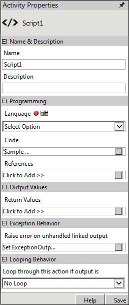

|
|
|
Activity description:
The Script Activity enables the execution of script written in languages, such as Jscript and VBScript, from the workflow. When the Script activity is included in the workflow, the activity calls the Run method in the script. The references to the assemblies in the script are taken from the activity properties. The string value returned from the Run method of the script is assigned to the Output parameter. The Script activity executes the script and gives the return values specified in the properties. The link matching this value is picked up to continue workflow execution.
Features of Script Activity
Note: Framework 4.0 has a library named System.Action and results in an ambiguity between the System.Action and Workflow.NET.Action. To avoid this ambiguity, it is recommended to name the Action class with complete namespace as 'Workflow.NET.Action' if it is used in the scripts inside script activity, while running BPM.NET 2011 SP2 in Framework 4.0.
Activity Properties:
The Script activity has to be configured by specifying appropriate values for the different properties in the Activity Properties area. The Activity Properties can be accessed by clicking on the Activity Properties tool in the Tool Bar or by selecting the appropriate option from the right click menu for the Script activity. The Activity Properties are organized under the following groups of related properties. The properties under each group are described in this topic.
The following image shows the Script Activity Properties window:

Name & Description
The properties in the Name & Description group have been described below. You can use these properties to specify the name and description for the activity.
The following image shows the Name & Description properties of Script Activity:
Name - This property can be used to specify a name for the activity.
Property Type: Optional (This property needs to be set only if necessary.)
Description - This property specifies a brief description to be displayed for the activity.
Property Type: Optional (This property needs to be set only if necessary.)
Programming
The properties in the Programming group have been described below. You can use these properties to program the script activity.
The following image shows the Programming Properties of the Script Activity:
Language - This property specifies the language of the script to be run. This property can be set to 'C#.NET', 'Jscript' or 'VBScript' depending on the scripting language required.
Property Type: Mandatory (This property must be set if the action is to be executed.)
Code - This property specifies the code of the script to be run.
Property Type: Mandatory (This property must be set if the action is to be executed.)
Steps to set the Code property
See Script - Code for a detailed description of the Code property window.
Reference - This property specifies the global objects that can be referenced in the script.
Property Type: Mandatory (This property must be set if the action is to be executed.)
Steps to set the References property
See Script - References for a detailed description of the References property window.
Output Values
The properties in the Output Values group have been described below. You can use these properties to specify the output values for the activity.
The following image shows the Output Values Properties of the Script Activity:
Return Values - This property allows the user to specify the return values for this action. These values become the conditions for the workflow engine to pick up the next action to execute.
Property Type: Mandatory (This property must be set if the action is to be executed.)
Steps to set the Return Values property
See Script: Return Values for a detailed description of the Return Values property window.
Action outputs:
The Script Action does not have any standard return value. It will output the value specified by the user in the Return Values property.
Exception Behavior
Each activity has the Raise Error on Unhandled Linked Output property on click of which, it shows all the default configured mapped error outputs in red with their check boxes selected.
See Mapped Error Outputs for more details.